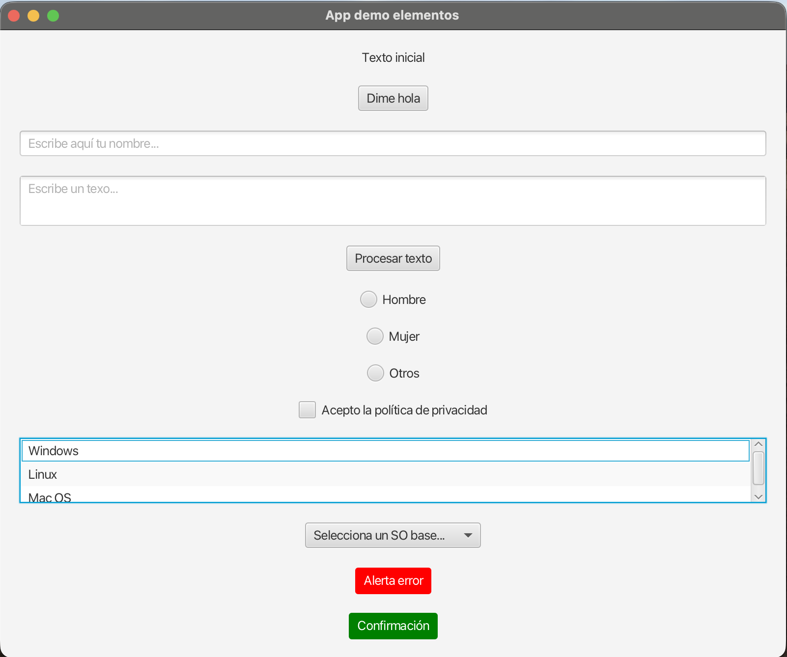

Elementos de Interfaz en JavaFX
1. Introducción a los Controles
JavaFX proporciona una amplia variedad de controles interactivos (nodos) para construir interfaces sólidas y amistosas. En este documento repasaremos los componentes más utilizados, prestando especial atención a cómo se referencian en el archivo de diseño visual y cómo recabamos o modificamos sus datos desde el controlador.
Vectores de Comunicación
Recuerda la regla de oro: la instancia visual del elemento nace y reside en el archivo .fxml (usando preferiblemente SceneBuilder), e interactuamos con su estado (leer o modificar) uniendo esa vista al archivo Controlador.java mediante la etiqueta mágica @FXML y su fx:id.
Vamos a ver los controles más utilizados:

2. Textos y Botones (Label y Button)
Cimientos obligatorios para cualquier interfaz gráfica. Un Label sirve para mostrar texto formativo o estático (como un título) y un Button es nuestro interruptor de acción.
En la Vista (FXML):
En el Controlador Java:
3. Entradas de Texto (TextField y TextArea)
Son los canales de inyección principales cuando solicitamos al usuario que escriba. Si prevemos un nombre o dato corto emplearemos un TextField (una única línea); si solicitamos comentarios largos, un TextArea multilínea.
En la Vista (FXML):
En el Controlador Java:
Pistas Visuales
La propiedad promptText es francamente útil. Imprime en pantalla un texto tenue (marca de agua informacional) que desaparece de forma automática tan pronto el usuario posicione su cursor y empiece a redactar encima.
4. Opciones Excluyentes (RadioButton y ToggleGroup)
A menudo, requerimos ofrecer Múltiples opciones donde el usuario solo puede fijar una. Al marcarlas en un visual FXML, se insertan habitualmente desvinculados por defecto. El gran truco es "agruparlos en manada" desde el código Java bajo un ToggleGroup.
En la Vista (FXML):
En el Controlador Java:
5. Casillas de Verificación (CheckBox)
Si a diferencia del bloque anterior, admitimos respuestas afirmativas/negativas asiladas que no interfieren con nada, el protagonista es el CheckBox.
En la Vista (FXML):
En el Controlador Java:
6. Listas y Desplegables (ListView, ComboBox y ChoiceBox)
Se usan para mostrar largas colecciones. ListView aloja un bloque scrollable listando todos sus integrantes permanentemente con tamaño fijo, mientras que el clásico ComboBox comprime esas opciones tras una lengüeta con flecha y se adapta excelentemente a entornos limpios sin espacio residual.
El mecanismo interno sobre el que ambas piezas gravitan es una ObservableList.
En la Vista (FXML):
En el Controlador Java:
7. Ventanas de Diálogo Remotas (Alert)
Hay pantallas para las que construir físicamente un popup.fxml con el patrón normal resulta innecesario y tedioso. JavaFX incluye de fábrica los "Alert": cuadros de advertencia automáticos perfectos para dar tirones de orejas, mensajes de confirmación de salida, etc.
En el Controlador Java: (Al ser entidades independientes autogeneradas internamente, carecen de registro fxml asociado)
💻 Reto Integrador: Matrícula DAM en el IES Camp de Morvedre
Pon a prueba todo lo que has dominado en este documento diseñando el "Formulario Oficial de Matrícula" para el ciclo de DAM en el IES Camp de Morvedre. Tu misión es crear una interfaz visual empleando absolutamente todos los componentes estudiados:
- Crea los archivos formulario-matricula.fxml y MatriculaController.java
- Entrada de texto: Un
TextFieldpara teclear tu "Nombre Completo" y unTextAreapara detallar tus "Conocimientos previos de informática". - Opciones excluyentes: Usa un grupo de
RadioButtonspara que el alumno escoja su vía de acceso exclusiva (ej: Bachillerato, Prueba de Acceso, Grado Medio). - Listados simples y múltiples: Incorpora un
ComboBoxpara elegir un Municipio de residencia, y unListViewen modo múltiple para que seleccionen al menos dos "Módulos optativos o áreas de interés". - Consentimiento y validación: Utiliza un
CheckBoxclásico mediante el cual se acepte explícitamente la directiva de privacidad y protección de datos del centro.
Por último, dispara el proceso desde un gran Button general de "Formalizar Matrícula". El controlador de este botón deberá validar que todos los campos constan de respuesta, que el cuadro de privacidad está verificado con un check y coronará la experiencia construyendo un resguardo resumido en pantalla mostrándolo como una advertencia en forma de Alert.